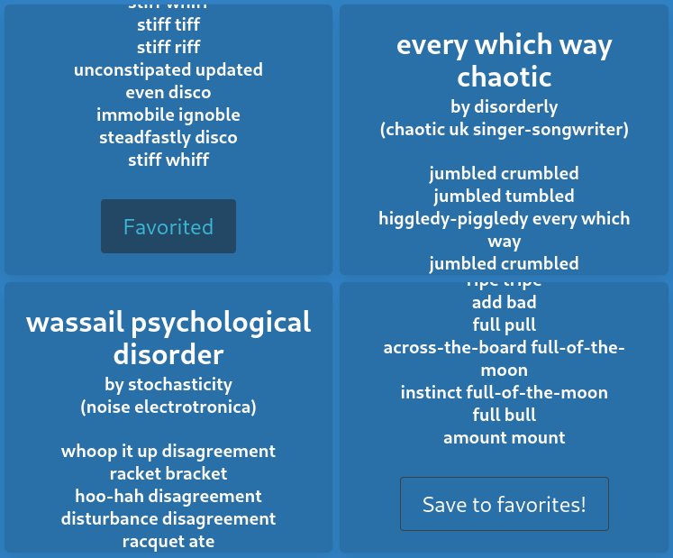

FUTURE SOUND OF MUSIC
Future Sound of Music was my attempt to write an artificial intelligence, build a database, and also design a website. In some ways, it was a success! In other ways, it is at least funny to watch. The site is built around Binary Jazz's 'Genrerator' API, which serves made-up music genre names. By utilizing various word association strategies, Future Sound of Music extrapolates from those genre names to imagine what music in those genres could be like.
- Visit site
- Demo video (YouTube)
Below is a sample of the lyrics generated on this site - click it to see more!

"Artifical intelligence"
At one point, FSOM used Markov chains to create song lyrics with the influence of the genre name and other generated details. Then, I realized there could be some legal and artistic concerns about training the Markov chain with the lyrics of other, real-world musicians.
Instead, I used RiTa.js to make lyrics based entirely on rhymes. To find words to rhyme, I searched through an open database of words and their synonyms I found on Kaggle, using the words in the genre string as the key. This results in very single-minded songs, but that's how a lot of real lyrics are.
UI/UX
I used Bulma for the CSS styling, and stuck with JavaScript web components to build the functional pieces of the UI. The song creation process takes in user input over several steps, and the UI keeps the user on track and does not allow interactions that would result in bad data.
Database
I used Firebase to store users' creations. Users can save favorite lyrics using local storage, and visit the favorites page to view them.